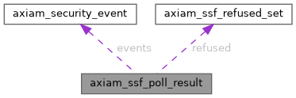

|
AXIAM C SDK 1.0.0
C11 client SDK for AXIAM (CONTRACT.md §1-§7, §9-§11, §13 incl. §6.1 mTLS)
|
What axiam_ssf_poll() returns. More...
#include <ssf.h>

Data Fields | |
| axiam_security_event_t * | events |
| The SETs that verified, in the map's order. | |
| size_t | events_count |
| int | more_available |
| Whether the transmitter holds more. | |
| axiam_ssf_refused_set_t * | refused |
| The SETs that did not verify. | |
| size_t | refused_count |
| char ** | unjudged |
| The keys of the SETs this poll could NOT judge (contract 1.59, P1): a JWKS or configuration fetch, or the replay store, failed before a verdict. | |
| size_t | unjudged_count |
What axiam_ssf_poll() returns.
Release with axiam_ssf_poll_result_dispose().
| axiam_security_event_t* axiam_ssf_poll_result::events |
The SETs that verified, in the map's order.
| size_t axiam_ssf_poll_result::events_count |
| int axiam_ssf_poll_result::more_available |
Whether the transmitter holds more.
| axiam_ssf_refused_set_t* axiam_ssf_poll_result::refused |
The SETs that did not verify.
| size_t axiam_ssf_poll_result::refused_count |
| char** axiam_ssf_poll_result::unjudged |
The keys of the SETs this poll could NOT judge (contract 1.59, P1): a JWKS or configuration fetch, or the replay store, failed before a verdict.
They are in neither events nor refused, and their jtis were not recorded — neither acknowledge nor refuse them, and the transmitter offers them again.
| size_t axiam_ssf_poll_result::unjudged_count |